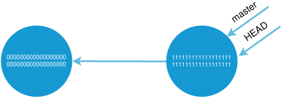
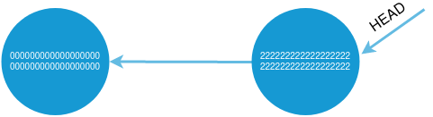
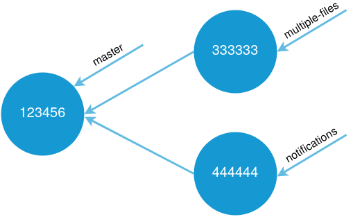

היום נדאג לממש 3 פקודות נוספות לתוכנת ה־wit שאנחנו כותבים: branch, graph ו־merge.
בכל תרגיל, הקפידו להגיש למערכת התרגילים את כל העבודה שביצעתם עד עכשיו על wit (כולל סעיפים קודמים).
תרגיל 1: הפקודה graph
ממשו את הפונקציה graph, שתופעל בעזרת הרצת הפקודה python path/to/wit.py graph .
הפונקציה תרוץ אך ורק אם אחת מתיקיות האב של תיקיית העבודה הנוכחית מכילה את התיקייה .wit.
הפקודה תצייר גרף (בעזרת מודול גרפים לבחירתכם).
בניית הגרף תתחיל מה־commit id שמסומן ב־HEAD. מה־commit id הזה יצא חץ אל עבר ה־commit id שמסומן כ־parent שלו. מה־parent שלו יצא חץ ל־parent שמעליו, וכך הלאה.
דוגמאות לגרף
python wit.py init
python wit.py add lms
python wit.py commit
(Output: Commit 0000000000000000000000000000000000000000 created)
python wit.py add C:\my\project\koko
python wit.py commit
(Output: Commit 1111111111111111111111111111111111111111 created)
python wit.py graph
תוצר הקריאה ל־wit.py graph:
(אם יותר נוח לכם, כללו רק את 6 התווים הראשונים של ה־commit id. במקרה שלנו, לדוגמה – 000000)
מספר ה־commit בגרף מפוצל ל־2 שורות בגלל חוסר במקום:

אם נמשיך ונבצע גם את הפקודות האלו:
python wit.py checkout 0000000000000000000000000000000000000000
python wit.py add somedata
python wit.py commit
(Output: Commit 22222222222222222222222222222222222222222222222222 created)
python wit.py graph
נקבל את האיור הבא:

כיוון שמהמקום בו אנחנו עומדים (HEAD הוא על 222222…) אנחנו לא יכולים לראות את commit 111111.
בונוס למתקדמים: אם הועבר ל־wit.py graph הפרמטר --all, הציגו את כל ה־commit־ים בגרף, לא משנה איפה נמצא HEAD. אתם יכולים להניח שהגרף אינו מעגלי.
שימו לב: אינכם חייבים לממש את החצים של master ו־HEAD שמופיעים באיורים מעלה. עם זאת, זה בונוס נחמד שיהפוך את התרגיל שלכם בהמשך למוצלח יותר.
תרגיל 2: הפקודה branch
ממשו את הפונקציה branch, שתופעל בעזרת הרצת הפקודה python path/to/wit.py branch NAME .
הפונקציה תרוץ אך ורק אם אחת מתיקיות האב של תיקיית העבודה הנוכחית מכילה את התיקייה .wit.
זו אחת הפקודות המעניינות והחשובות ביותר שנבנה ב־wit.py שלנו.
הפקודה הזו מדביקה תווית עם שם (NAME) לקומיט שעליו אנחנו עובדים. לתווית הזו אנחנו קוראים branch (“ענף”).
כל עוד ה־HEAD יהיה על ה־branch הזה, וה־branch הזה יהיה ב"מצב מופעל", התווית “תתקדם” יחד איתנו בכל commit שנעשה.
הפקודה הזו שימושית, נניח, אם אנחנו עובדים בצוות של כמה אנשים.
נדמיין מצב שבו ריצ’רד וחברו ארליך עובדים על בניית מערכת להעלאת תרגילים בקורס פייתון.
ריצ’רד מתחיל לעבוד על פיצ’ר של העלאת קבצים מרובים, וארליך מתחיל לעבוד באותו זמן על פיצ’ר של התראות (נוטיפיקציות).
שניהם נמצאים כרגע על הגרסה החדשה ביותר (ה־commit האחרון) במערכת, נניח 123456 (שם מקוצר).
כדי ששניהם יוכלו לעבוד בלי “לעלות” אחד על הקומיטים של השני:
- ריצ’רד כותב
python wit.py branch multiple-files - ארליך כותב
python wit.py branch notifications
ה־HEAD של שניהם עדיין נמצא על 123456, ועבור שניהם master עדיין מצביע על ה־commit שמספרו 123456.
- כדי להפעיל את הענף multiple-files, ריצ’רד יכתוב
python wit.py checkout multiple-files. - כדי להפעיל את הענף notifications, ארליך יכתוב
python wit.py checkout notifications.
עכשיו ריצ’רד וארליך הפעילו כל אחד את הענפים הרלוונטיים עבורו. הם נשארו באותו commit id, אבל הענף של כל אחד מהם נחשב במצב “מופעל”.
כשריצ’רד יריץ את הפקודות add ואז commit בפעם הבאה, יווצר commit חדש (נניח: 333333) שבו נמצא ריצ’רד, ואליו מצביעים multiple-files ו־HEAD. ה־parent של ה־commit שמספרו 333333 יהיה 123456.
נניח שאחריו ארליך (שעדיין נמצא ב־commit שמספרו 123456) יריץ את הפקודות add ואז commit. במקרה כזה יווצר commit חדש (נניח: 444444) שאליו יועבר ארליך, ואליו יצביעו notifications ו־HEAD. ה־parent של ה־commit שמספרו 444444 יהיה 123456.
גם master נחשב כ־branch. לכן, אחרי שתורץ הפקודה checkout multiple-files, לדוגמה, הענף multiple-files יהיה פעיל והענף master לא. זה אומר שב־commit הבא, master ישאר על ה־commit id הנוכחי, ו־multiple-files ו־HEAD יעברו ל־commit id החדש שנוצר.
נביט במצב החדש בעזרת wit graph (ה־HEAD הושמט, כיוון שהוא מצביע על 33333 במחשבו של ריצ’רד ועל 44444 במחשבו של ארליך):

ממשו את פונקציית wit branch.
- בעת הרצת הפקודה
python path/to/wit.py branch NAME, צרו שורה חדשה ב־references.txt. השורה תראה כך:NAME=COMMIT_ID, כאשר במקוםNAMEיופיע שמו של ה־branch, ובמקוםCOMMIT_IDיופיע מספרו של ה־commit שבו נמצא ה־HEAD בעת הרצת הפקודה. - בעת הרצת פקודת
checkout, יעודכן בקובץ בשם activated.txt שנמצא ישירות תחת התיקייה.wit, שמו של ה־branch שנמצא במצב “פעיל” בעת ביצוע הפקודה. זה יהיה כל תוכנו של הקובץ, ולכן אפשר להרגיש בנוח לדרוס אותו. - בעת הרצת פקודת
commit, יתעדכן (כרגיל) ה־HEAD כך שיצביע ל־commit החדש שנוצר.
לפני עדכון ה־HEAD, בדקו אם ה־branch שנמצא במצב “פעיל” מצביע לאותו מקום שבו נמצא ה־HEAD.
אם כן, עדכנו אתreferences.txtכך שה־branch יצביע למספר ה־commit החדש שנוצר.
שינויים שצריך לעשות:
- בניגוד למה שנכתב ביום 2, בעת פקודת commit, התווית master כבר לא תתקדם כל פעם שהיא וה־HEAD נמצאים באותו מקום. כדי שתתקדם, היא חייבת שהתנאי המדובר יתקיים וגם שהענף יהיה “מופעל”. הענף master “מופעל” והתווית תתקדם רק אם ה־checkout האחרון שהתבצע היה
python wit.py checkout master. - בעת הרצת הפקודה
init, יווצר קובץ חדש בשם activated.txt שבו ירשםmaster. - פקודת ה־
checkoutכעת צריכה להיות מסוגלת לקבל אחת משתי האפשרויות: או commit id, או שם של branch.
תרגיל 3: הפקודה merge
ממשו את הפונקציה merge, שתופעל בעזרת הרצת הפקודה python path/to/wit.py merge BRANCH_NAME .
הפונקציה תרוץ אך ורק אם אחת מתיקיות האב של תיקיית העבודה הנוכחית מכילה את התיקייה .wit.
זו פקודת ה־wit האחרונה שנממש.
הפקודה הזו תיצור commit חדש, שיאחד את הקבצים בין ה־commit הנוכחי שעליו מצביע ה־HEAD שלכם, לבין ה־BRANCH_NAME שהועבר כפרמטר לפקודת ה־merge.
זו פקודה שימושית במיוחד, כיוון שאם ריצ’רד וארליך עשו שינויים רבים בקוד, כל אחד ב־branch שלו, הם ישמחו לפקודה נוחה שתאפשר להם למזג את העבודה שלהם ל"תמונה" אחת.
פקודת ה־merge יוצרת commit חדש.
לצורך הרכבת הקבצים שיישמרו באותו commit אנחנו צריכים למצוא “בסיס משותף” – commit שהופיע בעבר, שהוא חלק מהיסטוריית ה־commit־ים גם של HEAD, וגם של BRANCH_NAME.
דוגמאות למציאת בסיס משותף
בציור הבא, בו יש את הענפים B, C ו־D, הבסיס המשותף לכולם הוא A.
+---- B
|
A <---- +---- C
|
+---- D
הנה כמה דוגמאות לגבי הבסיסים המשותפים באיור הבא: הבסיס המשותף ל־C ול־D הוא A, הבסיס המשותף ל־E ול־F הוא D, הבסיס המשותף ל־D ול־B הוא A, הבסיס המשותף ל־F ול־D הוא D, והבסיס המשותף ל־F ול־B הוא A.
+---- B
|
A <---- +---- C
|
+---- D ----+----- E
|
+----- F
אחרי שמצאנו את הבסיס המשותף ל־commit שעליו אנחנו נמצאים (ה־HEAD) ול־branch שקיבלנו כפרמטר (BRANCH_NAME), עלינו למצוא את כל הקבצים ששונו מאז הבסיס המשותף ועד BRANCH_NAME.
בתוך ה־staging_area, החליפו את הקבצים ששונו מאז הבסיס המשותף ועד BRANCH_NAME.
בצעו commit חדש כרגיל, והעבירו את HEAD, ואת ה־branch הפעיל ל־commit id החדש. אל תעבירו את BRANCH_NAME ל־commit id החדש.
לצורך התרגיל, אתם יכולים להניח שלא קיים מצב שבו הקובץ נערך גם אצלכם, וגם ב־branch שאתם מנסים למזג.
שימו לב שכעת יש ל־commit האחרון יותר מ־parent אחד. הפרידו את ה־parents בשדה parent בעזרת פסיק.
ודאו ש־graph, merge ושאר הפקודות שתלויות ב־parent עדיין מתפקדות כראוי.
בונוסים:
- אפשרו שהפרמטר לפקודה לא יהיה בהכרח branch name, אלא יוכל להיות גם commit id.
- (קשה מאוד) הניחו שיתכן שקובץ כלשהו שונה בשני המקומות במקביל. אם שורה שונתה ביותר ממקום אחד, הכשילו את ה־commit. אם שורות שונות שונו באותו קובץ, מזגו אותו.
מזל טוב! סיימתם לממש את wit!
סחטיין עליכם, עבודה מעולה! זה באמת פרויקט ראוי לציון.
נמשיך לדסקס על wit ועל השימושים שלו ביום 4.